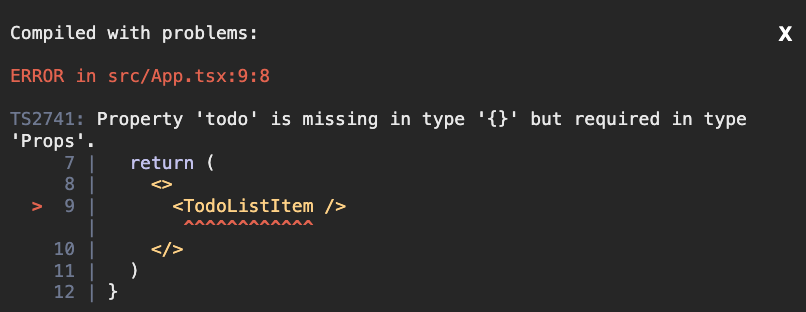
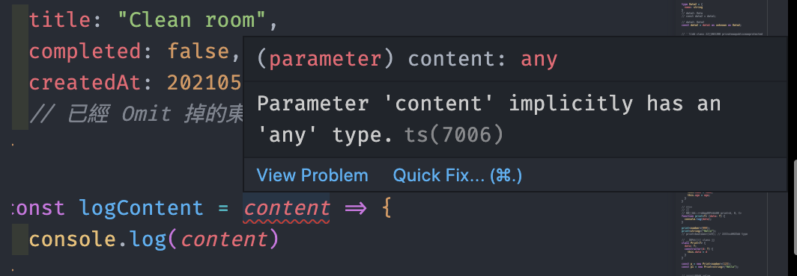

希望能越來越熟悉。
簡述 繼上次寫完 TtypeScript 基礎 後，又做了一個 Todo-list 來練習。這篇筆記是用來把我原本沒很懂的地方弄得更清楚一些。
錯誤訊息 1 
1 2 3 4 5 6 7 8 9 function App ( return ( <> <TodoListItem /> </> ) } export default App;
這個的意思是說，TodoListItem 裡面有設定會接收到 todo 這個 props，但你沒有給他。
TodoListItem 的內容：
1 2 3 4 5 6 7 8 9 10 11 12 13 14 15 16 17 18 19 20 import React from "react" ;interface Props { todo : Todo } export const TodoListItem: React.FC<Props> = ({ todo } ) => { return ( <li > <label style ={{ textDecoration: todo.complete ? 'line-throght ' : undefined }}> <input type ="checkbox" checked ={todo.complete} /> </label > </li > ) }
錯誤訊息 2 
這個意思就是你沒有幫他指定 type 的意思。
Type Declaration File 一個小技巧，你可以建立 *.d.ts 的檔案來當作 type 的宣告（因為編譯器會自動判斷），這樣子就不用再透過 module 來 import / export 使用。
Array 與 Object 資料型態是 Array 的話，除了告訴 TS 是陣列以外，還要順便告訴它值的 type 是什麼，像這樣：
1 2 3 4 let arr1: string [] = ['a' , '123' ];let arr2: string [][] = [['a' ], ['b' ]];
如果是 Array 包 Object 的話，可以先自定義一個 type，再把它設為 Array 的值：
1 2 3 4 5 6 7 8 9 10 11 12 13 14 15 16 type Todo { id : number , name : string , isDone : boolean } const todos: Todo[] = [ { id : 0 , name : 'todo1' , isDone : true } ]
至於 Object 的話通常會用 type 或 interface 來描述：
1 2 3 4 5 6 7 8 9 10 11 12 13 14 15 16 17 18 type Card1 = { name : string , des : string , } interface Card2 { name : string , des : string , } const obj1: Card1 = { name : "PeaNu" , des : "hello" , }; const obj2: Card2 = { name : "PeaNu" , des : "hello" , }
如果要決定 Object 的 key 跟 value 值，這邊提供一個範例：
假設我希望一個 Object 的值如下：
1 2 3 4 5 6 7 8 9 10 11 12 13 14 const obj = { username : [ { required : true , message : "Pleaase enter your username" , }, ], password : [ { required : true , message : "Please enter your password" } ] }
那他的 type 就會這樣設：
1 2 3 4 5 6 7 8 9 10 11 12 13 14 15 16 17 18 19 20 type Rules = { required : boolean , message : string } const rules: { [key: string ]: Rules[] } = { username : [ { required : true , message : "Pleaase enter your username" , }, ], password : [ { required : true , message : "Please enter your password" } ] }
至於 key 用 [] 包住是因為我們在存取屬性時會這樣寫 obj[key]，只要這樣子想就不會覺得困惑了。
Function function 可以指定兩個東西：
簡單示範一下 normal 跟 arrow 的差別：
1 2 3 4 5 6 7 8 9 10 const logContent = (content: string ): void => console .log(content) } function logContent2 (content: string ): void console .log(content); } logContent("test1" ); logContent2("test2" );
除了設定型別以外，也可以設定參數的值必須是什麼：
1 2 3 4 5 6 7 8 function getItem (key: 'A' | 'B' ): void console .log(key) } getItem('A' ); getItem('B' ); getItem('C' );
as 的用法 它不是用在變數身上，而是用在某個值，第一種是 「API response」：
1 2 3 4 5 6 async function getData ( const res = await fetch('https://jsonplaceholder.typicode.com/todos/1' ); const data = await res.json() as Data; console .log(data); }
第二種是用在「變數賦值」：
1 2 3 4 5 6 7 8 9 10 11 12 const data1: Data = { "userId" : 1 , "id" : 1 , "title" : "delectus aut autem" , "completed" : false } type Data2 = { name : string } const data2 = data1 as unknown as Data2;
如果直接把 data1 賦值給 data2，那 data2 就會繼承 data1 的 type （Data）。
不希望這樣的話就得用 as 來「斷言」，這邊是把它斷言為 Data2 這個 type。當然，也可以斷言成一般的 string、number 等等。
React 的小提醒
Props 需要定義 type
1 2 3 4 5 6 7 8 9 10 11 12 13 14 15 16 17 18 19 20 21 22 23 24 25 26 27 type Todo = { id : number, name : string, isDone : boolean } type LogMessage = (msg: string ) => void ; interface Props = { todo : Todo, logMessage : LogMessage } const TodoItem: React.FC<Props> = ({ todo, logMessage } ) => { return ( <> <li > {todo.name}</li > <button onClick ={logMessage} > log message</button > </> ) }
在 Component 中定義的 function / variable 都要記得給 type
1 2 3 4 5 6 7 8 9 10 11 12 13 14 import React from "react" ;const TestCom: React.FC = () => { const a: string; const handleSomething = (value: string): void => console .log(value); } return (<h1 > Test Component</h1 > } export default TestCom
關於 Event 的 type
如果是 inline function 的話可以不用幫 event 加上 type：
1 2 3 4 5 6 7 8 9 10 11 12 13 export const AddTodoFrom: React.FC<Props> = ({ addTodo } ) => { const [value, setValue] = useState("" ); return ( <form onSubmit ={e => { e.preventDefault(); addTodo(value); setValue(""); }}> <input type ="text" value ={value} onChange ={e => setValue(e.target.value)} /> </form > ) }
可是如果不是的話，就要用這種形式來代表：
1 2 3 4 5 6 7 8 9 10 11 12 13 14 15 export const AddTodoFrom: React.FC<Props> = ({ addTodo } ) => { const [value, setValue] = useState("" ); const handleSubmit = (e: React.FormEvent<HTMLFormElement> ) => { e.preventDefault(); addTodo(value); setValue("" ); } return ( <form onSubmit ={handleSubmit} > <input type ="text" value ={value} onChange ={e => setValue(e.target.value)} /> </form > ) }